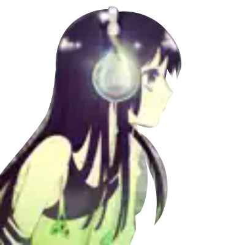

Web & interfaces
HTML, CSS, JavaScript, React, TypeScript, responsive design, motion and accessibility.
HELLO, I'M
Ксюша
I build digital experiences.
I explore how systems work.
Software developer · OSINT researcher · Bug bounty hunter · Digital creator

I'm Ksyusha, an independent developer and digital creator interested in the intersection of software, visual design and cybersecurity.
I build web experiences, macOS utilities, browser extensions and cross-platform desktop tools. I care about responsive interactions, thoughtful interfaces, privacy and software that solves real problems.
My security interests include open-source intelligence, authorized vulnerability research, responsible disclosure and online safety.
My journey has not always been easy. I have faced challenges growing up, and I continue to learn, heal and grow. Creating things is one way I express myself, explore who I am and turn difficult experiences into something meaningful. My past is part of my story, but it does not define everything I can become.
My profiles ↗Explore public projects, original project artwork and official websites.
Technologies I use and areas I explore.
HTML, CSS, JavaScript, React, TypeScript, responsive design, motion and accessibility.
Swift, SwiftUI, AppKit, Python, Qt / PySide6, Electron and cross-platform development.
macOS, Windows, Linux, Git, GitHub Actions, Xcode, command-line workflows and release packaging.
Ethical research, privacy and responsible reporting.
Public-source research, source verification, context review, evidence organization and factual reporting for online safety.
Research portfolio ↗Exploring application security, identifying weaknesses within authorized program scopes, and practicing responsible disclosure.
Separate observations from conclusions, protect sensitive information, and report through appropriate channels. No private case information is published here.
Explore my work or reach me through my public profiles.
Changes preview live and save automatically.